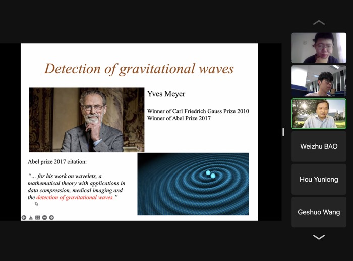
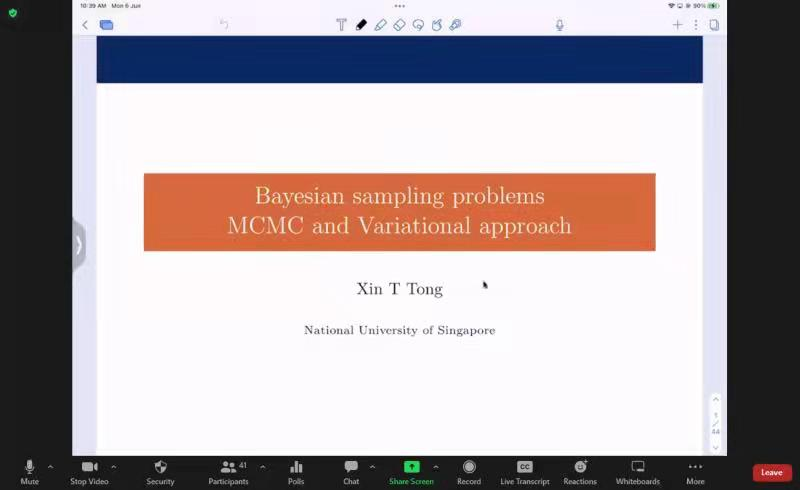
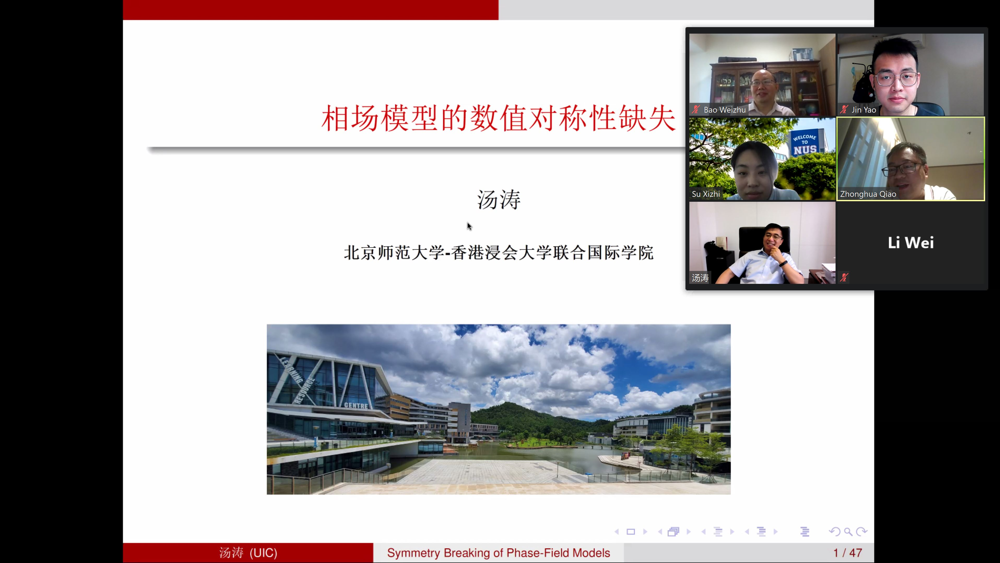
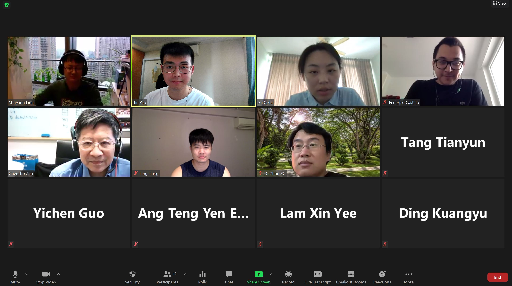
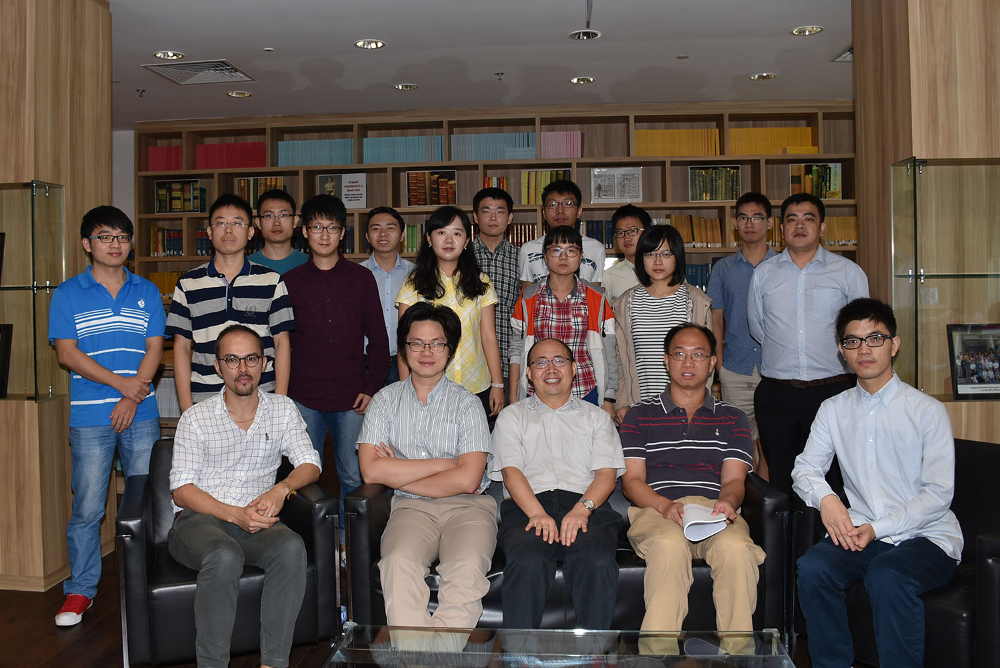

NUS Chapter 12th Symposium on Applied and Computational Mathematics
Thursday, 18 May 2023


NUS Chapter 11th Symposium on Applied and Computational Mathematics: keynote talk by Prof. Shen Zuowei
Tuesday, 7 June 2022

Keynote talk by Prof. Tong Xin

NUS Chapter 10th Symposium on Applied and Computational Mathematics: keynote talk by Prof. Tang Tao
Wednesday, 9 June 2021

Zoom talk given by Prof. Ling Shuyang
Wednesday, 19 May 2021

NUS Chapter 9th Symposium on Applied and Computational Mathematics
Wednesday, 17 June 2020

Dialogue with Prof. Eitan Tadmor
Thursday, 12 December 2019

NUS Chapter 8th Symposium on Applied and Computational Mathematics
Thursday, 26 February 2019

NUS Chapter 7th Symposium on Applied and Computational Mathematics
Monday, 26 February 2018

Dialogue with Prof. Lloyd Nicholas
Monday, 11 December 2017

Dialogue with Prof. Lek-Heng Lim
Friday, 22 September 2017


NUS Chapter 6th Symposium on Applied and Computational Mathematics
Tuesday, 21 February 2017
